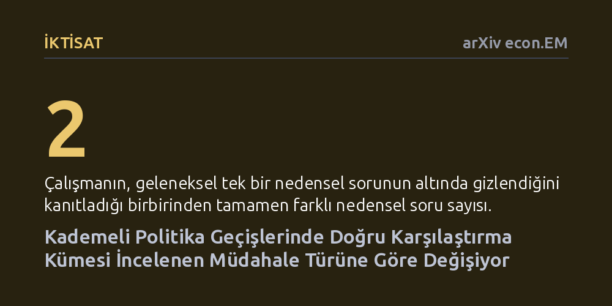

IKTISAT · arXiv econ.EM · 2026-10-24
Çalışma, birimlerin farklı zamanlarda bir uygulamaya geçtiği panellerde geleneksel nedensel çıkarım yöntemlerinin hangi soruya cevap verdiğini inceledi. Araştırmacılar, yaygın yöntemlerin kalıcı müdahaleleri yanıtlayamadığını ve doğru karşılaştırma kümesinin sorulan nedensel soruya göre zaman içinde değişmesi gerektiğini ortaya koydu.
Politika değerlendirmelerinde sıklıkla kullanılan farkların farkı ve sabit etkiler gibi yöntemlerin, aslında araştırmacıların hedeflediği uzun vadeli müdahale etkilerini değil, yalnızca anlık gecikmelerin sonuçlarını ölçebildiğini gösterir.

Sosyal bilimlerde, iktisatta ve kamu politikalarında bir yasanın ya da uygulamanın etkisini ölçmek zordur; çünkü toplumdaki tüm birimler bu uygulamaya aynı anda geçmez. Örneğin kimi eyaletler asgari ücreti 2018 yılında, kimileri 2020 yılında artırır, kimileri ise mevcut düzeni hiç değiştirmez. İktisatçıların "kademeli geçiş" adını verdiği bu veri yapısı, günümüzde politika değerlendirmelerinin ve nedensel çıkarım çalışmalarının en temel dayanağı haline gelmiştir. Buradaki standart soru görünüşte oldukça basittir: Uygulamaya geçen birimler bu adımı hiç atmasaydı nasıl sonuçlar ortaya çıkardı?
Uzun yıllardır araştırmacılar, uygulamayı erkenden başlatanlarla henüz başlatmayanları karşılaştırarak bu soruya güvenilir bir yanıt bulduklarını varsaydılar. Ancak bu varsayım, cevaplanmak istenen sorunun aslında iki farklı anlama gelebileceğini gözden kaçırıyordu. Gerçekten aradığımız şey bir kararın sadece anlık olarak geciktirilmesi mi, yoksa tamamen ve kalıcı biçimde engellenmesi mi? Bu iki durum arasındaki fark netleştirilmediğinde, milyonlarca insanı etkileyen politika kararlarının yanlış temeller üzerine kurulması riski doğar.
Araştırmacılar Ian Lundberg ve Yaling Xu, kademeli geçiş veri setlerinde en sık başvurulan yöntemleri kuramsal ve yöntemsel düzeyde masaya yatırdı. İncelenen araçlar arasında farkların farkı, birim sabit etkileri, eşleştirme ve sentetik kontrol gibi modern ampirik iktisadın temel taşları yer alıyordu. Bütün bu yöntemler, tedavi grubunun gelecekteki sonuçlarını tedavi edilmeyenlerin sonuçlarıyla kıyaslayarak nedensel bir etki hesaplamaya çalışır.
Yazarlar, ekonometride en yaygın kabul gören iki temel çerçeve altında matematiksel modelleme gerçekleştirdi: tüm karıştırıcı etkenlerin kontrol edildiğini varsayan koşullu göz ardı edilebilirlik yaklaşımı ile müdahale olmasaydı grupların benzer bir gelişim seyri izleyeceğini varsayan paralel eğilimler yaklaşımı. Her iki çerçeve altında da mevcut yöntemlerin hangi birimleri kimlerle kıyasladığı ve bu birimlere zaman içinde nasıl ağırlıklar atadığı formüle edildi.
Analizin ortaya koyduğu en temel sonuç, geleneksel yaklaşımların "müdahale yapılmasaydı ne olurdu" sorusunu tek bir paket olarak ele alıp iki tamamen farklı senaryoyu birbirine karıştırmasıdır. İlk senaryo anlık bir müdahaledir: Bir birimin politikayı tam kabul ettiği anda bunu yapması engellenseydi, fakat sonraki dönemlerde serbest bırakılsaydı ne olurdu? İkinci senaryo ise kalıcı bir yasaklamadır: Politikanın, sonuçların ölçüldüğü son ana kadar o birimde uygulanması kesin olarak engellenseydi ne olurdu?
Çalışma, mevcut popüler yöntemlerin yalnızca birinci soruyu, yani anlık ertelemeyi doğru ölçebildiğini ortaya koyuyor. Çoğu iktisatçının ve politika yapıcının asıl merak ettiği ikinci soruyu, yani politikanın kalıcı yokluğunun kümülatif etkisini ise mevcut yöntemler yanıtlayamıyor. Çünkü kalıcı bir yasağın etkisini doğru hesaplayabilmek, her bir zaman diliminde karşılaştırma kümesinin ve bu birimlere verilen ağırlıkların zamanla değişmesini zorunlu kılıyor; geleneksel modeller ise sabit ağırlıklar kullanarak hesaplamayı yanıltıyor.
Bu bulgu, geçmişte yapılmış birçok ampirik araştırmanın sonuçlarının yeniden değerlendirilmesi gerekebileceğini gösteriyor. Bir politikanın başarılı ya da etkisiz ilan edildiği çalışmalarda, aslında ölçülen şeyin politikanın kalıcı yokluğu değil, sadece bir dönem geciktirilmesinin yarattığı geçici fark olduğu anlaşılıyor. Örneğin bir eğitim reformunun ya da sağlık teşvikinin sonuçları incelenirken, araştırmacıların farkında olmadan hedefledikleri politika sorusundan çok farklı bir matematiksel soruya cevap vermiş olmaları muhtemeldir.
Yazarlar, gelecekteki ampirik çalışmaların öncelikle hangi nedensel soruyu hedeflediklerini netleştirmeleri gerektiğini vurguluyor. Eğer incelenmek istenen etki kalıcı bir politikanın uzun vadeli sonucuysa, araştırmacıların zamanla değişen karşılaştırma kümeleri ve dinamik ağırlıklandırma protokolleri kullanması gerekecektir. Aksi takdirde, doğru soruya yanlış araçlarla yanıt arama yanılgısı devam edecektir.